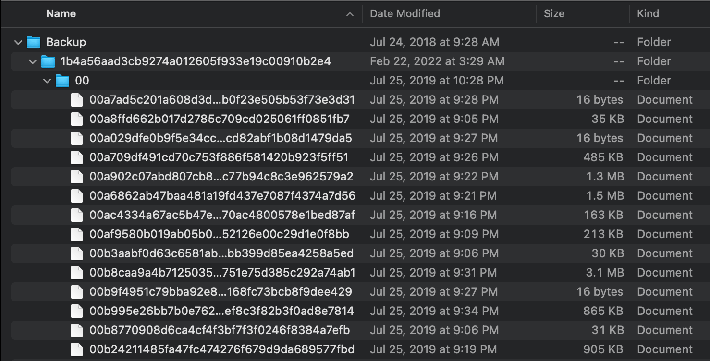

September 11th, 2023 — Josh
You stare at it with horror:
It stares back, seemingly muttering something under its breath in SHA-1-nese.
But there is no reason to be afraid, what seems impenetrable is really just thinly veiled security through obscurity. If you backed up your iPhone without encrypting it (an option presented by the koshered Mac backup wizard), it's pretty simple to sift through your files using basic Unix shell utilities.
Our main weapon will be the venerable file(1), which can guess a file's type using a number of heuristics (most notably an ever-growing database of magic numbers).
Magic numbers are the first bits of a file which uniquely identify the type of file. This makes programming easier because complicated file structures need not be searched in order to identify the file type.
An unencrypted iPhone backup has all of your files intact, just renamed and reorganized (as seen above). Picking some arbitrary files and running file(1) on them, you'll see something like this:
$ file 0a0d3486f074a2f287ac7167af599005a8a1d89c
0a0d3486f074a2f287ac7167af599005a8a1d89c: PNG image data, 1170 x 2532, 16-bit/color RGBA...
$ file 0a0dba92f4ae589674080cb11b8fd28660dc36a4
0a0dba92f4ae589674080cb11b8fd28660dc36a4: JPEG image data, JFIF standard 1.01, aspect ratio...
$ file a46ad74a3371767474e3139795cb2f68f0695ca
a46ad74a3371767474e3139795cb2f68f0695ca: ISO Media, Apple QuickTime movie, Apple QuickTime (.MOV/QT)
With that under our belt, we can cycle through all of your files, ignoring file types we don't care about or don't recognize, and sorting files types we do care about into a desired location.
As a refresher, this is the backup's directory structure:
$ ls
00/ 07/ 0e/ 19/ 28/ 33/ 3a/ 43/ 50/ 57/ 5e/ 65/ 6c/ 75/ 86/ 91/ 98/ 9f/ a6/ ad/
b4/ bb/ c6/ d1/ d8/ df/ ed/ fb/ 01/ 08/ 0f/ 1a/ 29/ 34/ 3b/ 44/ 51/ 58/ 5f/ 66/
6d/ 7b/ 87/ 92/ 99/ a0/ a7/ ae/ b5/ bc/ c7/ d2/ d9/ e2/ ee/ fc/ 02/ 09/ 10/ 1f/
2a/ 35/ 3c/ 45/ 52/ 59/ 60/ 67/ 6e/ 7c/ 88/ 93/ 9a/ a1/ a8/ af/ b6/ bd/ c8/ d3/
da/ e3/ ef/ fd/ 03/ 0a/ 11/ 20/ 2f/ 36/ 3d/ 4b/ 53/ 5a/ 61/ 68/ 6f/ 7d/ 89/ 94/
9b/ a2/ a9/ b0/ b7/ be/ c9/ d4/ db/ e4/ f2/ fe/ 04/ 0b/ 16/ 21/ 30/ 37/ 3e/ 4c/
54/ 5b/ 62/ 69/ 72/ 7e/ 8a/ 95/ 9c/ a3/ aa/ b1/ b8/ bf/ ca/ d5/ dc/ e5/ f3/ 05/
0c/ 17/ 26/ 31/ 38/ 3f/ 4d/ 55/ 5c/ 63/ 6a/ 73/ 80/ 8f/ 96/ 9d/ a4/ ab/ b2/ b9/
c0/ cf/ d6/ dd/ eb/ f4/ 06/ 0d/ 18/ 27/ 32/ 39/ 42/ 4e/ 56/ 5d/ 64/ 6b/ 74/ 81/
90/ 97/ 9e/ a5/ ac/ b3/ ba/ c1/ d0/ d7/ de/ ec/ f5/
$ tree 00/
├── 00008d501229a47a995ee978ef0dcef8a9566bb0
├── 00012dea17eeb10de316d8854340d5a2db55ce84
├── 0005f2f785150c7918c20f3a468d2571eefd7cfd
├── 000613f4c0b990ac0c91ba9cf1ed951cdcd98767
├── 00073b91bbbaad1fdd66b752172db2bfa93d06fe
├── 00113f8d9a7e5364612a17f7b561033026c0f031
├── 0014310bf09a503606714f20a1c0602059a15e3d
├── 001570a23147ee2fb3b92149e4d8ab1991ac1947
├── 0015874f84dbe0229f9eba2015fc772edb3cb076
├── 00181c1638446229cc13aaa223f6393f811edf0e
├── 0018e32f0cf6b9c3ab61263c657b520e21fa84bd
├── 00193d1dadfe965669885efca99441f00d93e045
├── 001f3ea2178c8e1c4a5b74d4ba744475754a4892
├── 0022a0b2bfcfcac3d89f62c1b7895a81588a57cb
├── 0029d6f6148536fe8bb29a040e7671ea878f2401
├── 002a4fe27f190ae7a54c6c2cfce9b6931b20f512
├── 002a682b56173d49ff47525012ad4408af23ac50
├── 003058595db7496cb2d77d1b19e4728abee1c1c0
├── 003450893962d0de90cb9d1af62375024e5627ba
├── 00374c715e32c145737a9fa73f567b8b3dc5bdca
├── 0039306c55bd0ccb91258fbd2ee65039b9a108d5
├── ...
└── 00fef2d2b37aed2273fe6fa1c5408d8b439314ac
A simple process like this will suffice:
#!/bin/bash
dest="~/my-epic-recovery-folder"
for dir in `ls -d */`; do
cd "$dir"
for file in `ls`; do
guess=`file "$file"`
ext=""
[[ "$guess" =~ "JPEG" ]] && ext="jpg"
[[ "$guess" =~ "PNG" ]] && ext="png"
[[ "$guess" =~ "MOV" ]] && ext="mov"
[[ "$guess" =~ "MP4" ]] && ext="mp4"
[[ "$guess" =~ "HEIF" ]] && ext="heif"
[[ "$guess" =~ "Ogg" ]] && ext="ogg"
[[ "$guess" =~ "ID3" ]] && ext="mp3"
[[ "$guess" =~ "M4A" ]] && ext="m4a"
[ -z "$ext" ] && continue # skip unrecognized files
mv "$file" "$dest/$file.$ext"
done
cd ..
done
The =~ operator checks if a string matches a regular expression (it is a bashism, you can do something like echo "$guess" | grep "jpg" to be POSIX-y). I derived these rules experimentally, you should observe the output of file on your system and your files, and then encode the rules as you'd like. You may also want to throw in some conditional logic that moves certain file types to varying destinations.
Now that you've saved your files with the appropriate file extension, you'll be able see their thumbnails and work with them in the applications of your choosing.
There is a host of other data sitting in your backup in the form of SQLite databases, like messages, contacts, notes, and so on. If you just want to grep through the plaintext, you can release the data with the sqlite3 command-line tool, e.g. sqlite3 <database file> .dump.
The method I showed above was enough for my purposes, but while doing research for this post I found that there is a canon of reverse engineered information about Apple's iPhone backups.
If you backed up your iPhone to an external drive, it is probably formatted in one of Apple's file systems (HFS+ or APFS). In order to read this drive on other Unix-like systems, you should install hfsprogs or apfs-fuse, and then run something to the effect of:
$ sudo mount -t hfsplus /dev/sdb2 /mnt/my-driveThis is just an example, you can find a more detailed explanation elsewhere online.
If you are backing up your iPhone and want the data to go directly to an external drive (e.g. maybe you don't have enough storage space on your computer's drive for it), you can make a symbolic link that points the iTunes backup destination to your drive. Something like:
$ ln -s <external drive destination> "~/Library/Application Support/MobileSync/Backup/"Hopefully this will help you avoid the mass of paid 3rd party "data recovery" wizards that are probably siphoning your passwords. It's a cold world, stay warm out there!
Next time, we will discover that snooping on network requests in the DevTools Networks tab is often enough to reverse engineer a proprietary API. (Take that, Jira!)